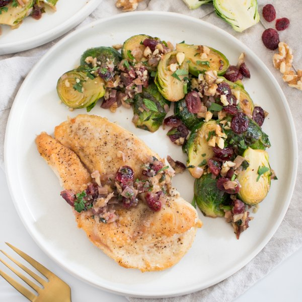

Chicken Cutlets with Lemony Brussels Sprout, Cranberry & Walnut Sauté

Nutrition (per serving)
587.8 kcalCalories
47.8 gProtein
51.6 gCarbs
23.8 gFat
Full nutrition table
| Calories | 587.8 kcal |
| Total fat | 23.8 g |
| Saturated fat | 3.5 g |
| Trans fat | 0.1 g |
| Cholesterol | 124.2 mg |
| Sodium | 149.2 mg |
| Carbohydrates | 51.6 g |
| Fiber | 9.7 g |
| Sugars | 24.7 g |
| Protein | 47.8 g |
| Potassium | 1453.3 mg |
| Calcium | 121.9 mg |
| Iron | 5 mg |
| Vitamin A | 1330.4 IU |
| Vitamin C | 170.8 mg |
| Vitamin D | 1.7 IU |
Cookware
Ingredients
- 1 ½ lbBrussels sprouts
- 1 ½ lbchicken breasts, boneless skinless
- 8 fl ozchicken or vegetable broth
- 1 cupdried cranberries
- 2 clovesgarlic
- 1 small bunchItalian (flat-leaf) parsley
- 1lemon
- ½ mediumred onion
- ¼ cupwalnuts
- all-purpose flour
- black pepper
- extra virgin olive oil
- salt
Steps
- Wash and dry the fresh produce.1 ½ lb Brussels sprouts
1 small bunch Italian (flat-leaf) parsley
1 lemon - Trim and halve Brussels sprouts; transfer to a medium bowl and set aside.
- Holding a knife parallel to the cutting board, cut the chicken in half horizontally to form thin fillets. Season both sides with salt and pepper.1 ½ lb chicken breasts, boneless skinless
½ tsp salt
½ tsp black pepper - Preheat a large skillet over medium-high heat.
- While the skillet heats up, sprinkle flour over both sides of each cutlet and press gently to adhere.¼ cup all-purpose flour
- Once the skillet is hot, add oil and swirl to coat the bottom. Working in batches if necessary, add cutlets and pan-fry until golden and cooked through, 3-4 minutes per side.2 tbsp extra virgin olive oil
- Meanwhile, using a clean cutting board, peel and mince onion and garlic.½ medium red onion
2 cloves garlic - When the chicken is done, remove to a plate and cover loosely with aluminum foil.
- Return skillet to medium-high heat, add additional oil, and swirl to coat the bottom.2 tbsp extra virgin olive oil
- Add onion and garlic to the skillet; cook, stirring frequently, until fragrant, about 1 minute.
- Add Brussels sprouts, broth, cranberries, and salt to the skillet; cover and cook, stirring occasionally, until Brussels sprouts are fork-tender, about 5 minutes.8 fl oz (1 cup) chicken or vegetable broth
1 cup dried cranberries
½ tsp salt - Meanwhile, shave parsley leaves off the stems; discard stems and mince the leaves. Place in the bowl used for the Brussels sprouts.
- Juice lemon into the bowl with the parsley.
- Roughly chop walnuts and add to the bowl.¼ cup walnuts
- Uncover the skillet, then add the parsley, lemon juice, and walnuts. Stir to combine and remove from the heat.
- To serve, divide chicken and Brussels sprout sauté between plates. Enjoy!